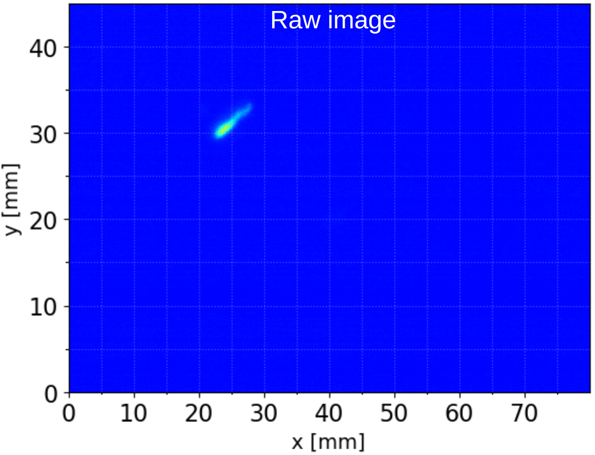

Welcome to migYOLO’s documentation!
migYOLO v1.0.0
migYOLO is a package containing tools for using the YOLOv8-based processing and rare event search analysis pipeline for CMOS camera data from the MIGDAL experiment (paper preprint here). This package has GPU support through PyTorch.
